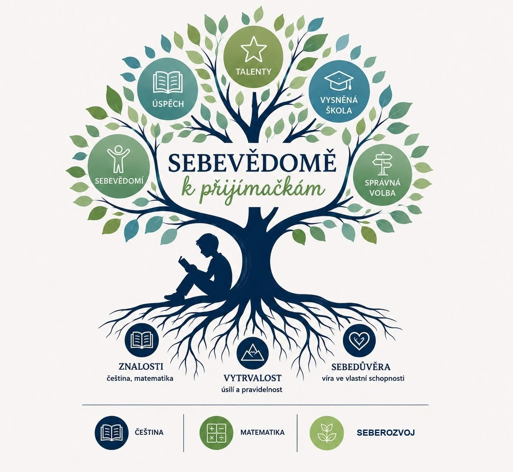

Sebevědomě
k přijímačkám
Prezenční kurz v Ostravě!!!
Český jazyk. Matematika. Seberozvoj.
Připravujeme žáky 9. tříd na přijímací zkoušky s jistotou, klidem a podporou na každém kroku.

Připravujeme na přijímačky komplexně.

-

Všechny oblasti podle CERMATu
Systematicky projdeme vše, co je u přijímacích zkoušek potřeba zvládnout.
-

Živá výuka v malých skupinách
Skupinky 4–10 žáků vytvářejí prostor pro aktivní zapojení, otázky i společné hledání řešení.
-

Individuální procvičování
Každý žák se zaměří na oblasti, ve kterých potřebuje získat větší jistotu.
-

Motivace a podpora
Vedeme děti k samostatnosti, zdravému sebevědomí a klidnému přístupu k přijímacím zkouškám.
-
Klid i pro rodiče
Nemusíte nic vymýšlet ani hlídat. Připravili jsme promyšlenou cestu, která šetří čas dětem i rodičům.
Jak probíhá příprava?
Jak bude vypadat příprava z češtiny?
V každé lekci budeme pracovat s textem podobně, jako je tomu u skutečných přijímacích zkoušek. Děti si tak postupně zvyknou, že jedna úloha často vyžaduje více dovedností najednou – porozumění textu, slovní zásobu, gramatiku i logické uvažování.
Současně projdeme všechny oblasti, které CERMAT u přijímacích zkoušek ověřuje:
- porozumění textu
- komunikační a slohová výchova
- pravidla českého pravopisu
- slovní zásoba, tvoření slov
- skladbu
- tvarosloví
- literární výchova
Po společné části bude následovat cílené procvičování. Každý žák se INDIVIDUÁLNĚ zaměří především na oblasti, ve kterých potřebuje získat větší jistotu.
Na DOMÁCÍ přípravu budou mít žáci k dispozici přehledné zázemí s materiály, videi s vysvětlením učiva, procvičováním, cvičnými testy a možností konzultací. Takže pokud se budou chtít vrátit k probíranému učivu, budou mít možnost.
A co je velmi důležité – již od první lekce budou pracovat na STRATEGII, jak nejefektivněji pracovat s přijímačkovými testy tak, aby získali co nejvíce bodů.
Obrovskou výhodu získají všichni, kteří začnou už v ZÁŘÍ. Budou mít dostatek času na přípravu a na přijímačky pak půjdou S KLIDEM, JISTOTOU A SEBEVĚDOMÍM.
Jak bude vypadat příprava z matematiky?
Blíží se přijímací zkoušky a vy se obáváte, zda vaše dítě matematiku zvládne? Zapomeňte na zdlouhavé memorování vzorců a „kuchařek“, které u ostré zkoušky často selžou.
V našem kurzu sázíme na hluboké pochopení principů. Cílem není, aby se žáci naučili postup nazpaměť, ale aby matematice skutečně rozuměli. Díky tomu si poradí i s úlohami, které je na zkouškách mohou překvapit. Nabyté matematické myšlení a logický přístup k řešení problémů navíc vašemu dítěti výrazně usnadní i samotné studium na střední škole.
Intenzivní příprava je zaměřená na všechny oblasti přijímacích zkoušek:
- číselné výpočty včetně práce se zlomky, desetinnými čísly a převody jednotek
- výpočet procent, úpravy algebraických výrazů a práce s daty
- řešení lineárních rovnic a jejich soustav, sestavení rovnice ve slovních úlohách
- geometrické výpočty a tělesa, u kterých prostorovou představivost trénujeme pomocí fyzických 3D modelů těles, díky nimž matematika přestává být jen abstraktní teorií na papíře
- konstrukční úlohy rýsujeme ručně a pro maximální názornost využíváme program GeoGebra
Pracujeme s pracovním sešitem gradovaných úloh, ve kterém obtížnost úloh stoupá postupně – od pochopení principu až po komplexní aplikaci znalostí.
Přestaňme se „šprtat“ a začněme rozumět. Pomozte svému dítěti získat jistotu, se kterou ke zkouškám z matematiky vykročí s klidnou hlavou.
Jak bude vypadat modul věnovaný seberozvoji?
V rámci programu Sebevědomě k přijímačkám se opřeme o čtyři základní pilíře sebepoznání:
- SILNÉ STRÁNKY – objevíme a pojmenujeme to, v čem jsou žáci dobří. Právě jejich jedinečné schopnosti jsou základem pro rozvoj vlastního potenciálu.
- EMOCE – naučí se také lépe rozumět svým emocím a vnímat je jako důležitého průvodce, který jim může pomoci se lépe rozhodovat a zvládat náročné situace.
- VNITŘNÍ PŘESVĚDČENÍ – společně odhalíme myšlenky, které žáky podporují, i ty, které je naopak zbytečně brzdí. Učíme se nahrazovat sebekritiku zdravým sebevědomím a důvěrou ve vlastní schopnosti.
- VIZE A KARIÉRNÍ SMĚŘOVÁNÍ – povedu žáky k tomu, aby přemýšleli o své budoucnosti, poznali své hodnoty a dokázali si zodpovědně vybírat cestu, která jim dává smysl a zároveň přináší hodnotu společnosti.
Věřím, že sebepoznání není něco „navíc“. Je to základ, na kterém mohou žáci a studenti stavět nejen při přijímačkách, ale i v dalším životě – a stejně tak jim pomáhám zorientovat se při výběru střední školy, která bude odpovídat tomu, kým skutečně jsou.
Volná místa ve skupinách
U každého předmětu si vybíráte čas zvlášť – tady vidíte, kde je ještě volno.
Proč
právě my?
Přes 20 let praxe
ve vzdělávání
Stovky spokojených
žáků a rodičů
Jediný komplexní
kurz na trhu
Jasný plán bez starostí
pro rodiče
Individuální přístup
a podpora
Poznejte nás
Více o nás
Co říkají rodiče a žáci
Přijímačky nemusí být období stresu.
Pomůžeme vašemu dítěti prožít tuto cestu s jistotou a klidem.
Přihlásit dítě